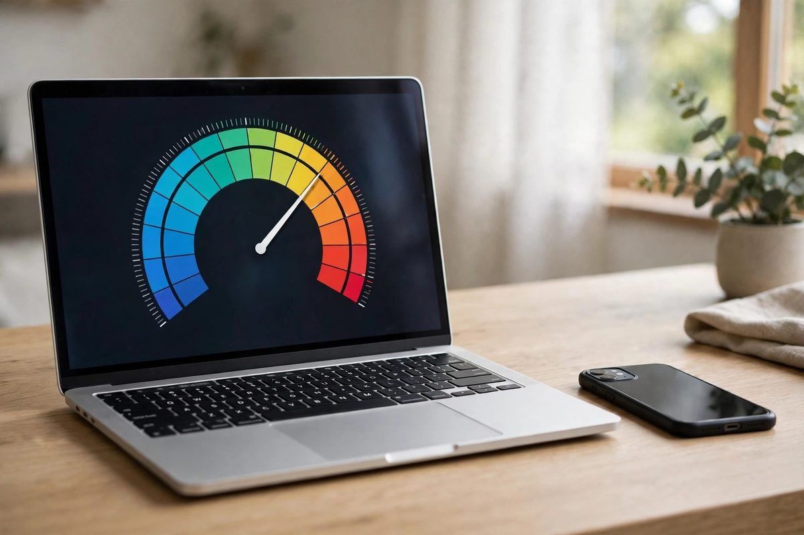

How to Test Internet Speed Accurately

A speed test takes less than a minute, but the number it shows is only useful if the test was run properly. A result taken while someone else streams a film, or from the far corner of the house on weak Wi-Fi, tells you more about that moment than about your connection. If you want a number you can trust, one you can compare with the speed your provider promised, it is worth testing the right way. An accurate test needs no special tools, just a few minutes and the right setup.
What a Speed Test Actually Measures
A standard speed test measures three main things. Download speed is how fast data travels to your device, and it decides how quickly pages load, films start, and files arrive. Upload speed is how fast data travels from your device to the internet, and it matters for video calls, sending large files, and live streaming. Ping, also called latency, is the delay before data starts moving, measured in milliseconds. A fourth figure, jitter, shows how steady that delay is. Together, these numbers describe your connection better than any single figure, so check all of them, not just the headline download speed. Our guide to download vs upload speed explains the first two in more detail.
Prepare Before You Test
Small things running in the background can quietly eat your bandwidth and distort the result. Before you test, close streaming apps, pause cloud backups and software updates, and shut down any large downloads. If other people in the house are watching video or playing games, ask them to pause for a minute, or test when the house is quiet. Restarting a router that has run for weeks without a break also helps, since it clears temporary glitches. These steps take two minutes and make the difference between a useful result and a misleading one.
- Close every app that uses the internet, including streaming, backups, and game launchers.
- Disconnect or pause other devices that may be downloading or streaming.
- Test on the device you care about most, such as your work laptop or main computer.
Follow These Steps for an Accurate Result
Once everything is quiet, the test itself is simple. Use a wired connection if you can, and run the test three times in a row, a minute apart. A single test can be thrown off by a brief traffic spike, while three tests show the pattern. Take the middle result, not the best one, as your real speed. Then repeat the test over Wi-Fi in the rooms where you actually use the internet.
- Plug your computer into the router with an ethernet cable if possible.
- Open the speed test tool and wait for it to finish completely.
- Run the test three times and note the middle result for download, upload, and ping.
- Repeat the test over Wi-Fi in each room where you work, watch, or play.
- Compare the wired and wireless results to find where speed is being lost.
Test Over a Cable First, Then Over Wi-Fi
A wired test shows the fastest speed your connection can deliver, because a cable removes wireless interference from the picture. If the wired result matches your plan but the Wi-Fi result is much lower, your broadband is fine and the Wi-Fi is the problem. That is a common finding, and it is good news, because improving Wi-Fi is usually cheaper and easier than upgrading your plan. Our Wi-Fi vs ethernet guide explains the difference in depth, and our guide to what ping is and why it matters explains the delay figure in your results.
What Can Make a Result Look Worse Than It Is
Several everyday factors can drag a result down. An old router may not support the full speed of your plan, especially if you upgraded recently. Testing at peak evening hours, when the whole neighbourhood is online, often shows lower speeds than a morning test. A browser full of extensions, or a device running a scan, can slow the test itself. Distance, thick walls, and interference from nearby networks also reduce Wi-Fi results. If your result seems too low, change one thing at a time and test again.
How to Read Your Results
Compare your download speed with the speed in your plan, keeping in mind that providers usually advertise an "up to" figure. A wired result within 80 to 90 percent of that figure is normal. Ping under 20 milliseconds is excellent, while anything above 100 will feel sluggish in games and calls. If your results are far below your plan on a wired test, try the checks in our how to fix slow internet guide before contacting your provider.
| Measurement | Good result | Needs attention |
|---|---|---|
| Download | Close to your plan speed | Below half your plan speed |
| Upload | 10 Mbps or more | Below 3 Mbps |
| Ping | Under 20 ms | Over 100 ms |
Keep a short note of your results, including the date, time, and whether you tested over a cable or Wi-Fi. A small log turns a vague feeling that the internet is slow into clear evidence, and helps you spot patterns, such as a connection that always slows down each evening.
Frequently Asked Questions
How many times should I run a speed test?
Run it three times in a row and take the middle result. A single test can be affected by a brief spike in traffic, while three tests show the real pattern.
Why is my speed test result lower than my plan speed?
Your plan speed is an "up to" figure, and Wi-Fi, old routers, background apps, and peak-hour congestion can all reduce it. Test over a wired connection first to check the line itself.
Does a speed test use much data?
Yes, a single test can use 100 MB or more on a fast connection. Avoid running repeated tests on a mobile data plan with a small allowance.
Test Your Connection Now
Run a free speed test and see your real ping, download and upload speeds in under a minute.
Start Speed Test